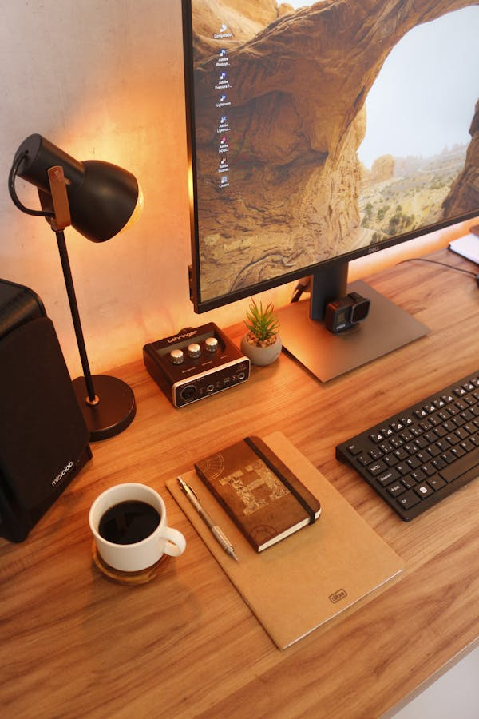

What guides my work
I usually aim for clarity first, then personality, then polish. That order helps the final result feel more professional and less crowded.
About me
I enjoy turning ideas into websites that feel calm, polished, and easy to move through. My work sits between design taste and frontend execution, so I care about both how a page looks and how it flows.
Most of what I build is personal portfolios, landing pages, and business websites. I like clean layouts, strong typography, responsive structure, and the small details that make a site feel more human from the first scroll.
What guides my work
I usually aim for clarity first, then personality, then polish. That order helps the final result feel more professional and less crowded.
The person behind the work
I care about websites that feel personal, clear, and professional without trying too hard.
My workflow
I like a workflow that stays simple: understand the goal, shape the layout, and refine the small things that make a website feel complete.

What matters to me
Good websites are not only visual. They also need a clear message, a comfortable browsing flow, and enough trust to feel ready for real people to use.
I like interfaces that guide attention naturally and make the main message easier to understand.
I want the experience to hold up across desktop, tablet, and mobile screens instead of only one view.
I care about websites that feel credible, calm, and ready to represent a person or business well.
My process
I do my best work when the message is clear early. Once that foundation is right, the visual direction and frontend polish become much easier to refine.
I start by clarifying what the page should say, who it should speak to, and what action matters most.
Typography, spacing, hierarchy, and section flow come next so the page feels calm and easy to follow.
Then I refine the motion, responsiveness, and small details that make the whole thing feel complete.